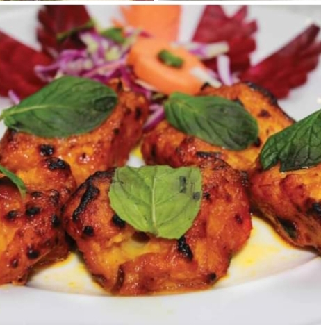
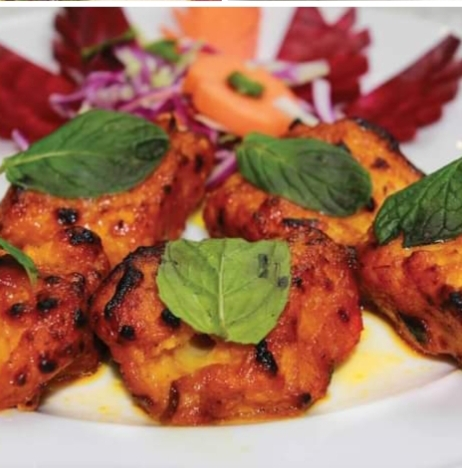

:أهلا وسهلا بزبائننا الكرام المطعم في خدمتكم ,لطلب التوصيل إملأ الإستمارة أدناه
_1.jpg)
_1.jpg)
_1.jpg)
_1.jpg)
_1.jpg)
_1.jpg)
مطعم جميل جدا ,أفضل مطعم أكلات بحرية ,ولا أروع تأخذ العائلة راحتها تماما ,فهو الأفضل من حيث النظافة و التصميم الداخلي الممتاز والمعاملة الجيدة من طرف الطاقم يحظى بأجواء وديكورات هادئة شبه فندقية من الأطعام الأكثر مبيعا سلطة الروبيان والأفوكادو,تبولة,أرزمشخول روبيان و أرز برياني روبيان لكن لدينا خيارات أخرى مثل سلطة ومقبلات باردة حظى هذا المطعم على تقييم 3.5حسب 408تقييم من مستخدمي الطلبات
.jpg)
.jpg)
.jpg)
.jpg)

_1.jpg)
_1.jpg) 

الأسعار مناسبة جدا كمثله من المطاعم ,المنيو متنوع من أسماك وقشريات وأرز ومقبلات بالاضافةإلى المشروبات يقدم أفضل الأطباق بأفضل الخدمات ضمن فريق مميز ومكان مصمم بدقة من حيث الراحة ,إحترام الزبون واجب ,الزبون دائما على حق راحتكم تهمنا واسعادكم غايتنا
مطعم السلمون الذهبي دائما على أتم الإستعداد لتنفيذ وتجهيز أفضل الحفلات و المناسبات العائلية المميزة بتشكيلة واسعة من أفضل المأكولات الهندية والبحرية اللذيذة ...متوفر الآن بجميع فروعنا أهلا وسهلا بالجميع
_1.jpg)
_1.jpg)
الطعام لذيذ الخدمة ممتازة المكان هادئ الإطلالة جميلة شكر خاص للطاقم على حسن المعاملة*
طلبي كان كابوريا ثيرميدور هذا النوع من الطعام يغلب عليه البحري والسمك والقشريات ..أسعارهم جيدة ومنافسة للفئات المشابهة من المطاعم*
الأسعار مناسبة المنيو متنوع جدا تم طلب شوربة بيسك ثمار البحر وكانت لذيذة جدا*
التصنيف:مناسب للعائلات و الأفراد
النوع:مطعم مؤكولات بحرية
الأسعار :أسعار متوسطة
الأطفال: مناسب للأطفال
الموسيقى:لا يوجد موسيقى
مواقيت العمل: من الواحدة مساءا إلى غاية الواحدة صباحا
| الوجبة | الرمز | الوجبة | الرمز | الوجبة | الرمز |
| بلح البحر بالجبنةأوالسوتيه | B01 | حبار مقلي | B02 | حبار مشوي | B03 |
| تشيكن لولي بوب | B04 | كبة مقلية | B05 | حمص باللحم | B06 |
| سبرنج رول | B07 | سمبوسة | B08 | بطاطا مقلية | B09 |
| الوجبة | الرمز | الوجبة | الرمز | الوجبة | الرمز |
| كوكتيل الجمبري | A01 | سلطة سي فود | A02 | سلطة خضراء | A03 |
| ورق عنب | A04 | حمص أومتبل | A05 | فتوش | A06 |
| سلطة سيزار بالدجاج | A07 | سلطة جرجير | A08 | سلطة يونانية | A09 |
| تبولة | A10 | مشكل مقبلات | A11 | مزة خضراء | A12 |
| سلطة لبن بالخيار | A13 | سلطة زيتون | A14 | بابا غنوج | A15 |
| شوربة السلمون الذهبي | S01 | شوربة مانشو | S02 | شوربة كلير | S03 |
| شاودر بحرية | S04 | بيسك بحرية | S05 | هوت آند سور | S06 |
| شوربة تميوم | S07 | شوربة عدس | S08 | دجاج بالكريمة أو الذرة | S09 |
| فونتشيني جمبري | C01 | فوتتشيني ثمار البحر | C02 | سباجيتي ثمار البحر | C03 |
| نودلز ثمار البحر | C04 | جمبري مقلي إيطالي | C05 | باشميل بالحمة | C06 |
| فوتتشيني الفريدو دجاج | C07 | نودلز دجاج | C08 | كوردن بلو | C09 |
| لازانيا | C10 | بيني ارابيانا | C11 | اسكالوب ميلانو | C12 |
| اسكلوب بانية | C13 | ستيك فطر | C14 | ستيك بوافر | C15 |
| جمبري مقلي | M01 | جمبري مع الثوم | M02 | جمبري صلصة حارة | M03 |
| جمبري شاشليك | M04 | جمبري سوتيه | M05 | جمبري مشوي | M06 |
| جمبري مشروم | M07 | تمبورا جمبري | M08 | جمبري بالكاجو | M09 |
| روبيان ملايكة | M10 | جمبري جولدن | M11 | جمبري أناناس | M12 |
| جمبري بلاكند | M13 | جمبري تندوري | M14 | جمبري مقلي | M01 |
| استاكوزا ثرمادور | R01 | استاكوزا مشوية | R02 | استاكوزا سوتيه | R03 |
| استاكوزا تندوري | R04 | استاكوزا بالفرن | R05 | استاكوزا على البخار | R06 |
| كابورياعلى البخار | R07 | كابوريا بالفرن | R08 | كابوريا تندوري | R09 |
| سمكة كاملة تندوري,مشوي,مقلي | P01 | سلمون مشوي | P02 | سمك منير | P03 |
| سمك ماسلا | P04 | سمك فلورنتا | P05 | سمك سويت آند ساور | P06 |
| سمك بروكلي | P07 | سمك بالكاجو | P08 | سمك مانجو | P09 |
| سمك فنجر | P10 | سمك البارميزان | P11 | سمك مشوي | P12 |
| سمك مقلي بالبقسماط | P13 | شاشليك على الصاج | P14 | سمك تندوري | P15 |
| سمك بلاكند | P16 | سمك سويت ليمون | P17 | سمك فنجر | P10 |
| مشاوي السلمون الخاصة | H01 | دجاج على الفحم | H02 | نفر مشكل مشوي | H03 |
| كباب أورفلي | H04 | أوصال لحم | H05 | صفائح دبس الرمان | H06 |
| صفائح خضار | H07 | كباب باذنجان | H08 | ريش لحم | H09 |
| كبة مشوية | H10 | شيش طاووق | H11 | عرايس | H12 |
| كفتة السلمون الذهبي | H13 | مشكل لحم | H14 | مشكل دجاج | H15 |
| كبدة غنم | H16 | كباب دجاج | H17 | كباب لحم | H18 |
| كفتة طماطم | H19 | كفتة دبس رمان | H20 | حميس | H21 |
| مشكل السلمون الذهبي | W01 | طبق السلمون الذهبي تندور | W02 | طبق السلمون الذهبي مشوي أو على الصاج | W03 |
| دجاج تندوري | L01 | دجاج باربكيو | L02 | دجاج سوتيه | L03 |
| بلاكند على الصاج | L04 | ستيراند فرايد | L05 | دجاج منشورين | L06 |
| دجاج تكا | L07 | دجاج ماسالا | L08 | دجاج تكا ماسالا | L09 |
| دجاج شاشليك | L10 | مشكل مشاوري تندوري | L11 | دجاج بالكاجو | L12 |
| شيش طاووق تندوري | L13 | شيش كباب دجاج تندوري | L14 | كباب دجاج بالثوم تندوري | L15 |
| دجاج بالزبدة | L16 | دجاج جال فرايزي | L17 | دجاج بالسبانخ | L18 |
| برياني سمك | F01 | كبسة سمك | F02 | أرز كشميري | F03 |
| أرز صيادية | F04 | أرز مقلي ساجون | F05 | أرز أبيض | F06 |
:أهلا وسهلا بزبائننا الكرام المطعم في خدمتكم ,لطلب التوصيل إملأ الإستمارة أدناه
:للتواصل معنا